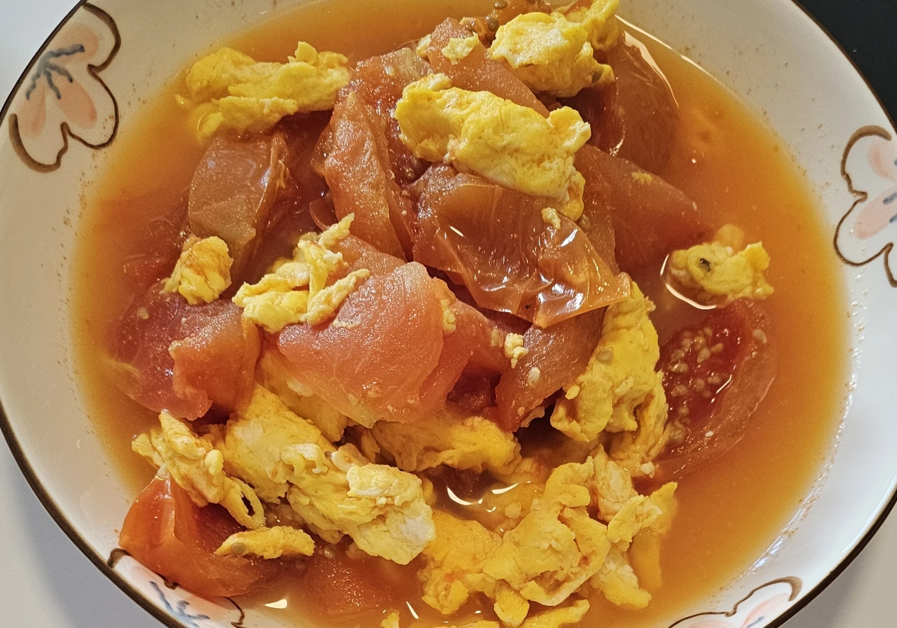

// Recipe · Side dish · 番茄鸡蛋
Tomato & Egg

Soft scrambled eggs simmered with sweet, saucy tomatoes, so the eggs soak up the tomato flavor.
Ingredients
- 4 eggs
- 3 tomatoes
- Butter
- Water
- Sugar
- A little salt
Steps
- Beat the eggs in a bowl and cut the tomatoes.
- Heat a pan and add butter.
- Pour in the eggs and stir with a spatula until scrambled. Set aside.
- In another pan, add the tomatoes, water, salt, and plenty of sugar.
- Cover with a lid and simmer until the tomatoes are soft.
- Add the scrambled eggs and simmer a little longer so they take on the tomato flavor.